lun: Norwegian for warm and sheltered
The tabs, and the page.
That is all there is on screen. Lun is a small, fast, quiet browser for the Mac.
Version 0.1.1 · Apple silicon · macOS 14 or later · MIT

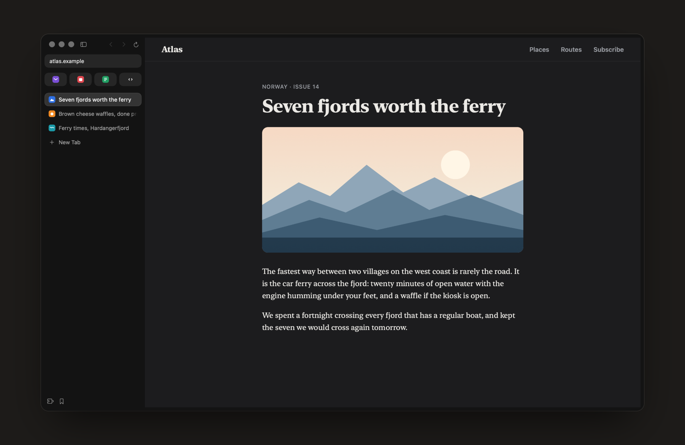
- 8 MB
- The whole download. Lun runs on WebKit, the engine already in every Mac, so it carries none of its own.
- No account
- Nothing to sign up for, and no sync through anyone’s server.
- No telemetry
- Lun has no server of its own to send anything to.
This page is laid out the way Lun is: tabs down the side, the page as a card. The switches further down move its tabs, colour its space and split it in two.
A new tab is one card.
Type an address or a search, or pick up where you were. Nothing else asks for your attention. ⌘T opens one, and ⌘L takes you to the address from anywhere.
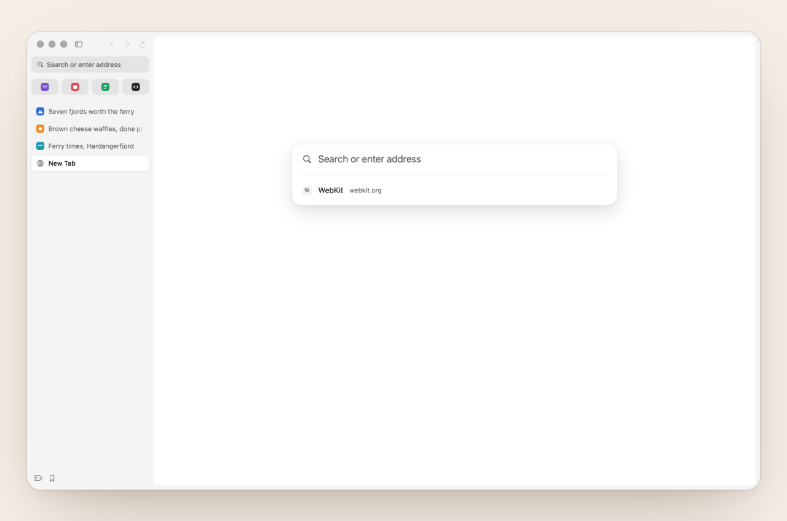
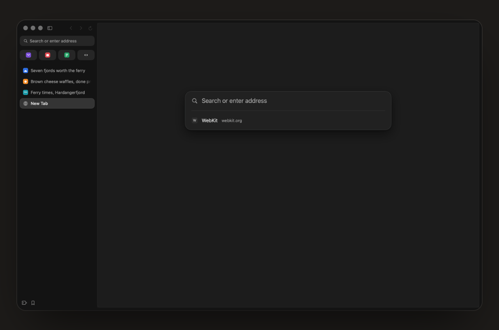
Two pages, side by side.
Split View keeps an article beside the timetable it talks about. ⌥-click a tab, drag one onto the page, or press ⌥⌘N.
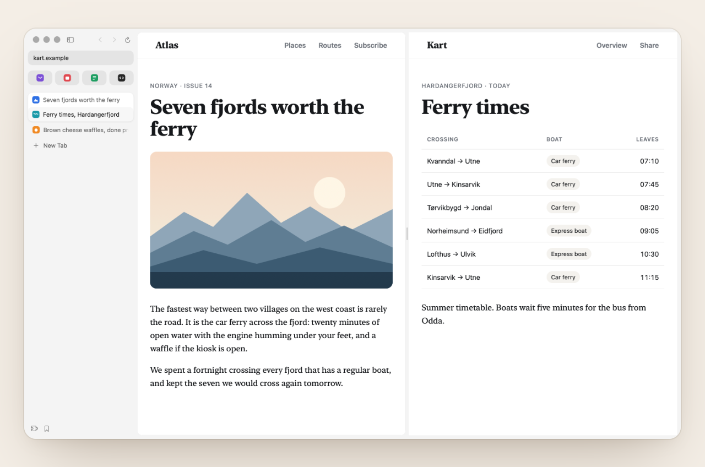
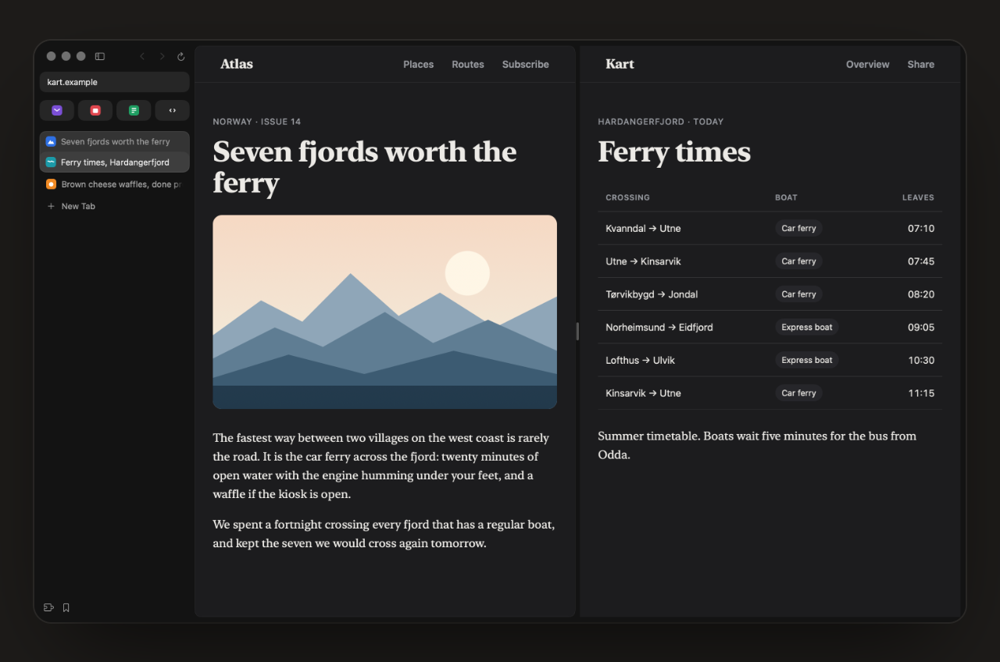
Spaces keep things apart.
Work in one, the trip in another, each with its own tabs, pins and colour. Swipe between them.
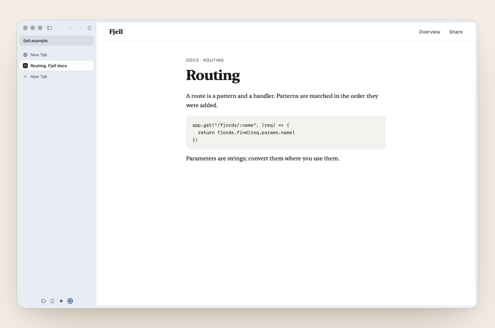
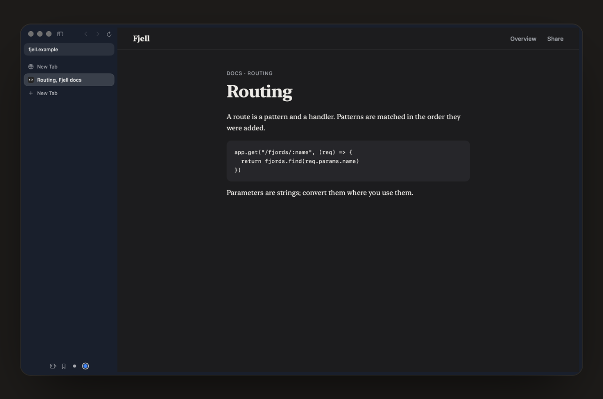
Tabs where you want them.
Down the left, down the right, across the top, or as a narrow strip of icons. ⌘S puts them away.
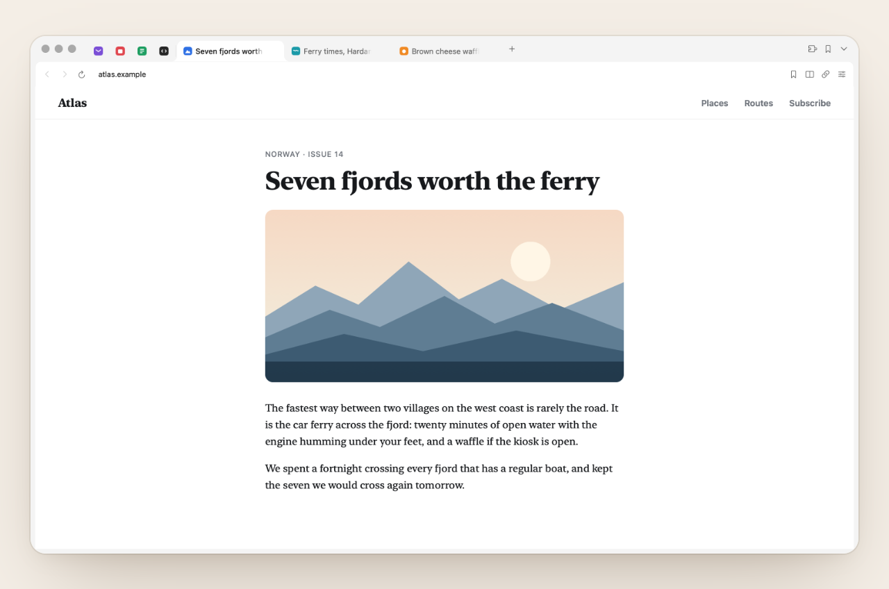
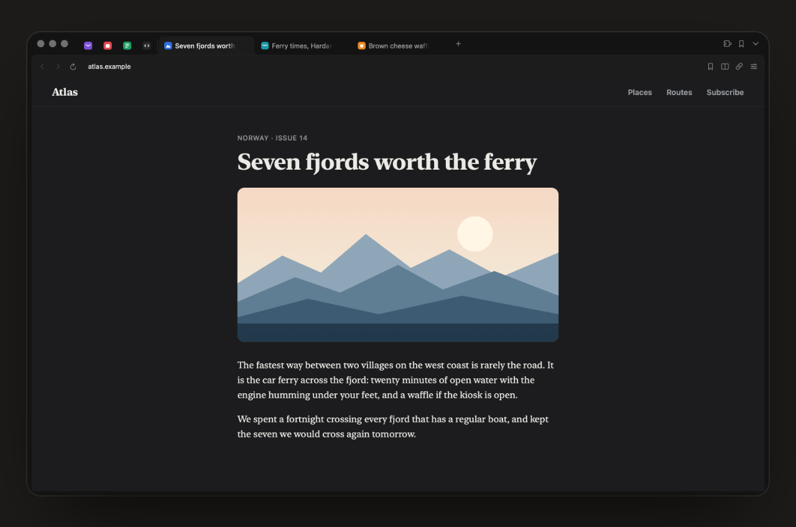
Settings you can read in a minute.
Each page opens on the few rows most people come for. The rest is one press away, and there is not much of it. Every key can be changed, too.
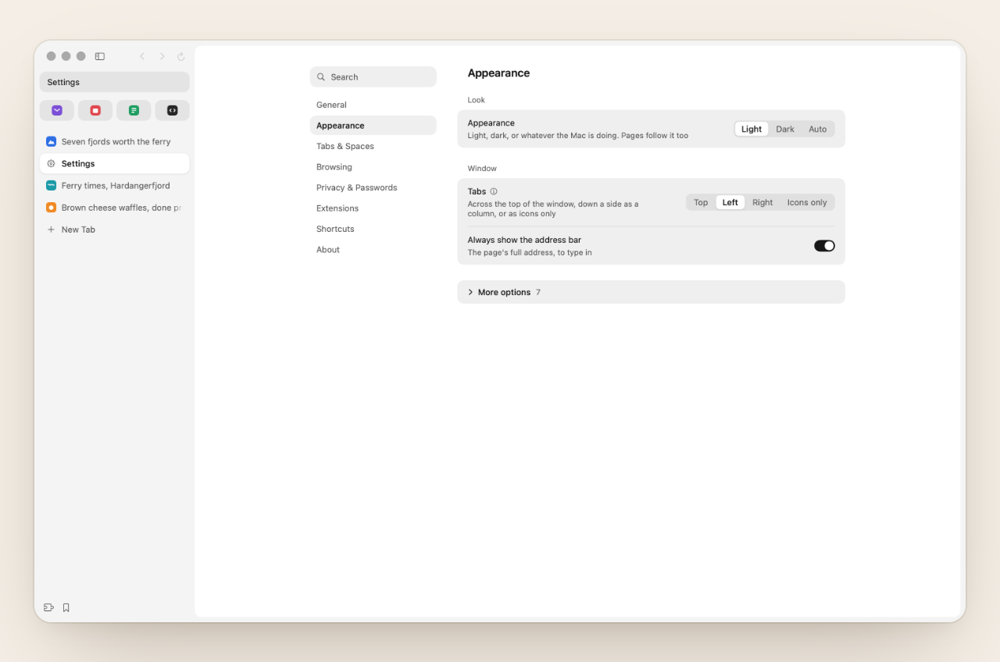
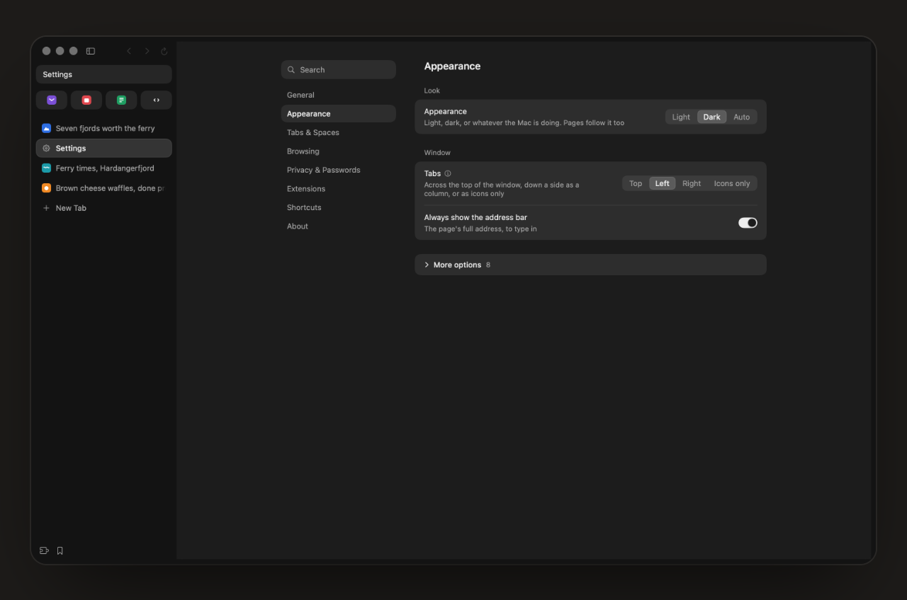
And the rest.
- Pinned sites and pinned rows, in folders if you like
- A built-in ad and tracker blocker
- Reading mode, and a video that floats when you leave its tab
- Peek at a link without leaving the page
- Passwords in the macOS keychain, behind Touch ID
- Chrome extensions, on WebKit’s own extension engine (macOS 15.4 or later)
- Bring your tabs, bookmarks, history and passwords over from Arc, Chrome, Firefox and others
- Tabs you leave alone go to sleep, and can close themselves
- Light and dark, following the Mac
- A bookmarks page: folders in a tree beside a table or a grid
Your data, on your Mac.
Lun has no server of its own: no account, no telemetry and no sync. By itself it only checks GitHub for a newer Lun, and the Chrome Web Store for newer versions of the extensions you installed.
| What | Where it is kept |
|---|---|
| Passwords | The macOS keychain, tagged Lun |
| History, bookmarks, tabs | ~/Library/Application Support/Lun/ |
| Cookies and site data | WebKit’s store for the app |
Questions.
Is Lun free?
Yes. Lun is free and open source under the MIT licence. There is no account, no subscription and no telemetry.
Which Macs does it run on?
Apple silicon Macs on macOS 14 or later. There is no build for Intel Macs yet; for now you can build it yourself.
How do I install it, and keep it up to date?
Open Lun.dmg and drag Lun to Applications. It is signed and notarised, and keeps itself up to date from there.
Do Chrome extensions work?
Lun runs Chrome extensions on WebKit’s own extension engine, which needs macOS 15.4 or later. An extension that depends on Chrome-only features may not work.
Can I bring my things from another browser?
Yes. Lun brings your tabs, bookmarks, history and passwords over from Arc, Chrome, Firefox and others.
Open source, and early.
This is version 0.1.1. Expect rough edges, and say what you find. Every line is on GitHub under the MIT licence: read it, build it, or send a pull request.
Latest releases
| 0.1.1 | Bookmarks has a page of its own. Passwords can be checked for reused and easy-to-guess ones, on your Mac only. |
|---|---|
| 0.1.0 | The first Lun: a new look for the column, the tabs across the top, Settings and every page, light and dark. |
Not yet
| Intel Macs | Needs a second build. For now, build it yourself. |
|---|---|
| Passkeys, iCloud sync | Need an Apple provisioning profile. |
A warm, sheltered place to browse from.
8 MB · Apple silicon · macOS 14 or later